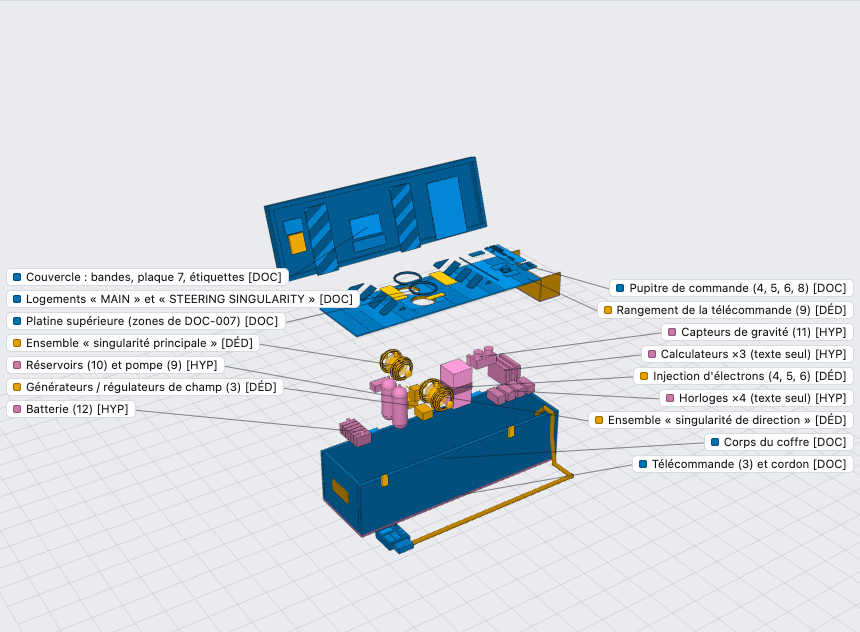
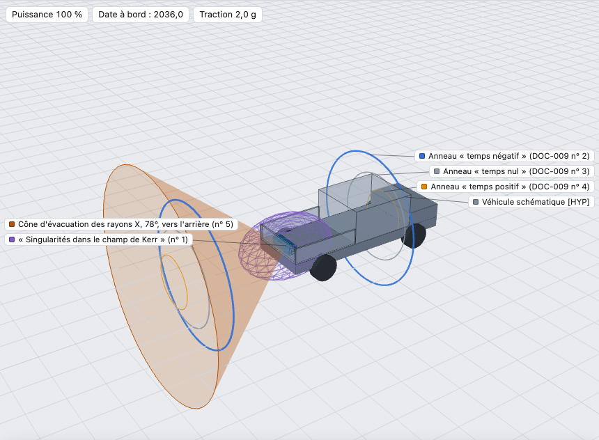
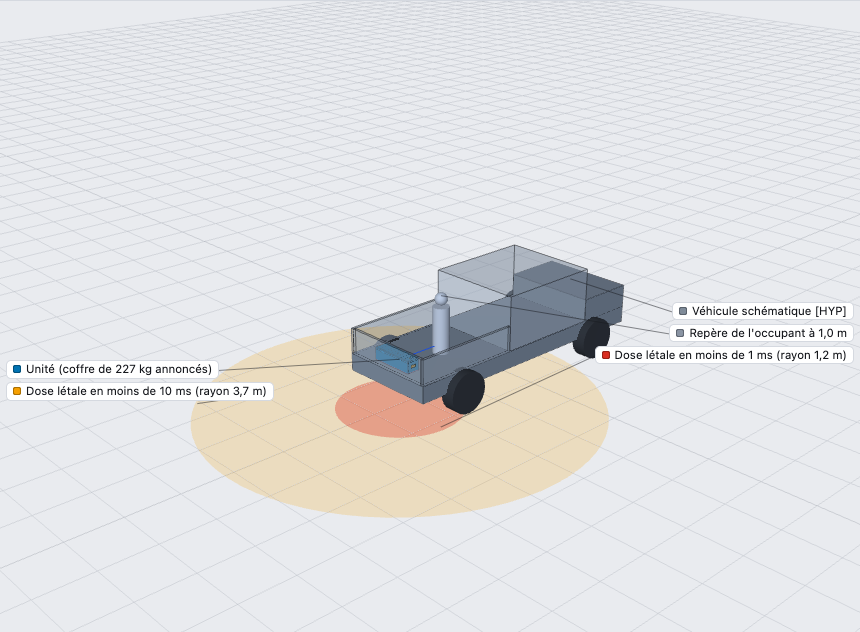
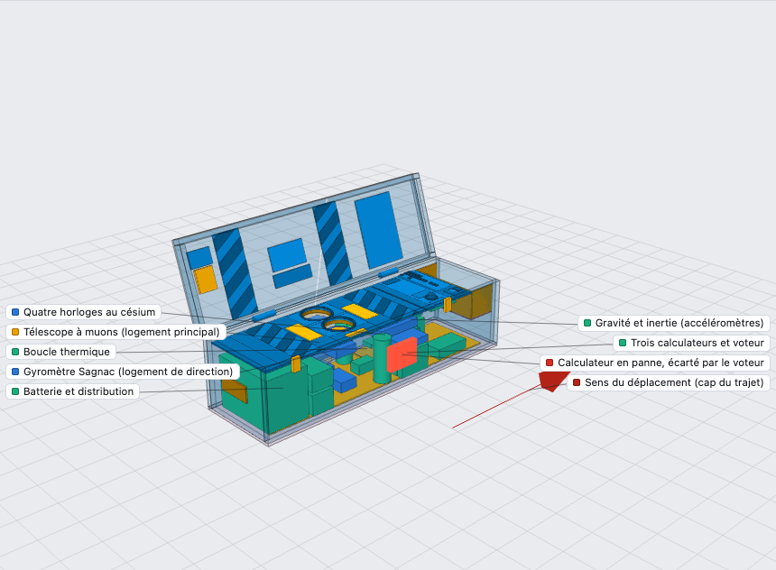

Rien de ce qu'affirment les documents d'origine n'est tenu pour vrai. Les vues « si elle fonctionnait » mettent un récit en images ; elles ne correspondent à aucun phénomène observé. Aucune expérience n'a été réalisée : tout ici est reconstitution, calcul et simulation.
Quatre façons d'explorer
Le simulateur tourne dans le navigateur, sans rien installer. Chaque carte ouvre directement le mode correspondant.




Les chiffres qui fâchent
Les nombres du récit, pris au pied de la lettre et passés au calcul. Chaque valeur est recalculée par un script du dépôt.
Les pièces du dossier
Six des vingt-deux documents inventoriés. Ce sont des images anonymes diffusées sur des forums en 2000-2001, reproduites ici pour les analyser. Leur provenance et leurs empreintes sont dans l'inventaire.


Du document au modèle
Chaque pièce du modèle 3D porte son niveau de preuve : lue sur un document, déduite, ou supposée. Rien n'est documenté sous la platine supérieure ; l'intérieur est donc une hypothèse, et le modèle le dit.

Ce qu'on peut vraiment construire
Pas une machine à voyager dans le temps : un instrument de mesure dans le même coffre. Coûts et durées sont des estimations sans devis, et rien n'a été construit par nous. Lire le guide de construction
Tout le dossier
Douze rapports, leurs scripts et leurs données. Tout se relance depuis le dépôt.
Méthode et limites
Comment c'est fait. Huit équipes d'agents d'IA spécialisées, pilotées avec Claude Code : archives, physique théorique, ingénierie, simulation, modèle 3D, expériences, littérature récente, machine optimisée. Une neuvième, la Red Team, n'avait qu'une mission : démolir le travail des autres.
Ce que la Red Team a trouvé. 58 erreurs ou conclusions trop fortes dans notre propre dossier, toutes corrigées. Chaque rapport se termine par son journal de corrections.
Ce qui est vérifié. Les calculs se relancent à l'identique. 446 références ont été contrôlées en ligne, sur leurs métadonnées et leurs résumés, pas sur leur texte intégral.
Ce qui ne l'est pas. Aucune expérience n'a été réalisée et rien n'a été construit. Les simulations sont illustratives. L'échelle du coffre repose sur des étalons supposés.
Ce qu'on ne sait pas. Qui était l'auteur, d'où vient l'écorché à 35 repères, et comment la photo du « laser courbé » a été faite.
Ce qu'on ne prétend pas. Des passionnés ont épluché ces images dès 2003. Ce dossier fait le tour complet, de l'archive jusqu'au simulateur, et montre ses sources.